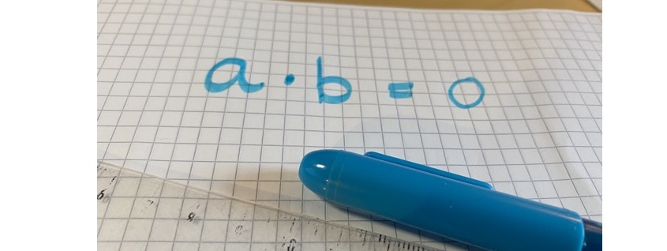

Enkle kvadratiske likninger
Contents
Enkle kvadratiske likninger¶
Et uttrykk som kan skrives på formen \(q^2\) kalles et fullstendig kvadrat. Tenk på det som et kvadrat som har lengde \(q\) og arealet er \(q^2\).
I denne leksjonen skal du lære å kunne omforme uttrykk til slike fullstendige kvadrater og utnytte det til å løse likninger. Uttrykket \(x^2+6x+9\) er et eksempel på et slikt uttrykk. Dette er et fullstendig kvadrat siden
Å skrive slike uttrykk som fullstendige kvadrat vil bli nyttig når vi skal
løse likninger
omforme uttrykk
Nå skal vi mest jobbe med å omforme uttrykk, men avslutningsvis skal vi få løse noen likninger.
Fullstendig kvadrat¶
I videoen under forklarer vi hva fullstendige kvadrat er. Før du ser videoen, faktoriser disse to uttrykkene:
Oppgave 1
Hvilke av uttrykkene under kan skrives som et fullstendig kvadrat?
a) \(x^2 + 4x + 4\)
b) \(x^2+8x\)
c) \( 1-2x+x^2\)
d) \(4x^2 + 8x + 4\)
e) \(x^2\)
f) \( (x+4)^2-4^2\)
Løsning
a) Dette er et fullstendig kvadrat fordi \(x^2 + 4x + 4 = x^2 + 2\cdot 2 \cdot x + 2^2 = (x+2)^2\)
b) Dette er ikke et fullstendig kvadrat fordi det kan ikke skrives på formen \(q^2\).
c) Dette er et fullstendig kvadrat fordi \( 1-2x+x^2 = 1^2 -2 \cdot 1 \cdot x + x^2 = (1-x)^2\)
d) Dette er et fullstendig kvadrat fordi
e) Dette er allerede skrevet som et kvadrat med sider x.
f) Dette kan ikke skrives som et kvadrat, \(q^2\). Regner du dette ut ser du at
Oppgave 2
Løs likningen
Tenk etter hva oppgaven går ut på og hvordan du løser den før du går videre.
I videoen under skal du se nærmere på likningen \(x^2=4\), hvordan du kan løse den og hva som egentlig står der.

Produktregelen¶
Når produktet av to tall er null, vet vi at minst ett av tallene må være null. Denne sammenhengen brukes ofte når vi løser likninger og kalles gjerne for produktregelen.
Produktregelen
Oppgave 3
Gitt denne likningen:
Hva må \(x\) være?
Løsning
Her må enten \(x+2=0\) eller \(x-1=0\). Det vil si at det er to løsninger: \(\mathcal L = \{ -2, 1\}\).
Oppgave 4
Hvordan kan du bruke produktregelen til å løse følgende likning?
Løsning
Siden \(3x\) er felles faktor i de to leddene, får du
Faktorisering og produktregelen gir et kraftig verktøy når du løser likninger. Du får dermed at
Enkle kvadratiske likninger¶
Tidligere har du sett at \(x^2 = 4\) er et eksempel på en kvadratisk likning. Det er et eksempel på den enkleste formen for kvadratisk likning.
Kvadratiske likninger finnes i mange varianter, alle har som fellestrekk at den siden av likningen som inneholder \(x\) kan skrives på formen \(q^2\). Noen eksempler er
Oppgave 5
Hvordan kan det siste uttrykket skrives om slik at venstre siden blir på kvadratisk form? Forklar.
Hvordan kan du skrive om det første uttrykket slik det også blir på kvadratisk form.
Løsning
Ved andre kvadratsetning får du at
Bruker du dette, kan du løse den siste likningen slik: